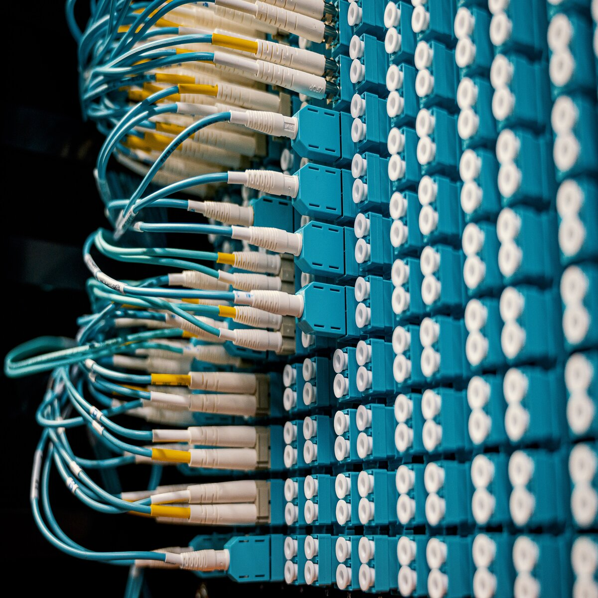
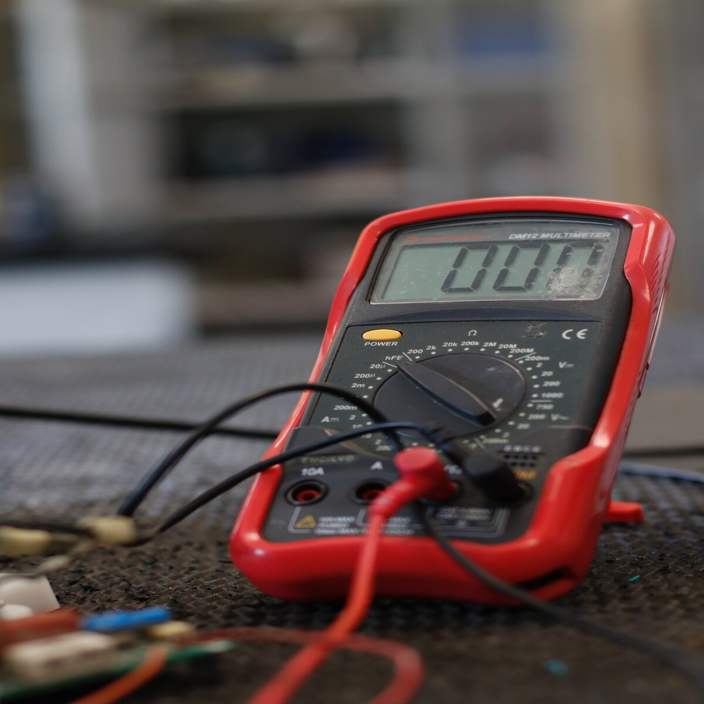
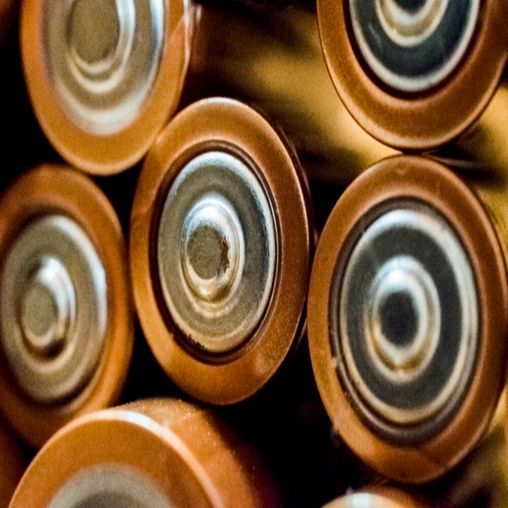

The new Sunny Boy 3.0–6.0 ensures maximum energy yields for private homes.
Thanks to its integrated web interface for easy commissioning via a smartphone or tablet and SMA Smart Connected
service, this inverter offers true ease and comfort for PV system operators and installers.
With SMA Smart Connected, SMA offers free and automatic inverter monitoring that helps installers to provide
customers with a quick, targeted service. If an inverter fails, SMA proactively informs the PV system owner and
the installer. In this way, PV system owners and installers benefit from minimized diagnosis and downtime.
If it is necessary to replace the inverter, SMA sends a replacement device fast and free of charge. Order the product

Solar charge controllers Steca Solarix 2525 and 4040 are newly developed products based on the internationally renowned
controller family Steca PR. With increased module and load current, the controllers are now also suitable for even
larger systems. The devices also feature an integrated USB charging port for charging smartphones and tablets.
Use of the latest charging technologies combined with state of charge determination enable optimal battery maintenance
and module power monitoring.
A large display informs the user about all operating modes with the aid of symbols. The state of charge is represented
visually as a level meter. Data such as voltage, current and state of charge can also be displayed digitally as figures
on the display. In addition, the controller has an energy meter which can be reset by the user. Order the product

The AGM range has very low internal resistance making them particularly suitable for high current discharge applications
such as for inverters, thrusters and winches.
The GEL model range offers best deep cycle durability and overall longer life. The use of high purity materials and lead
calcium grids ensure that for both AGM and GEL products have particularly low self-discharge so that they will not go
flat during long periods without charge.
Both ranges are supplied with M8 drilled, flat copper terminals ensuring best possible connection contact and eliminating
the need for battery terminals. The batteries are compliant with both CE and UL specifications in ABS fireproof containers
and come with Victron's 2 year world-wide warranty. Order the product